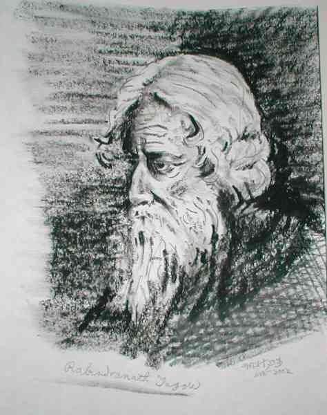

|
|
||||
|
Sudden Demise of our respected contributor Narayan Gupta We are sad to announce that one of our regular contributors Mr. Narayan Gupta is no more in this world. He passed away in the the first week of May, 2003 at the age of 68. Throughout his life, Narayan Gupta was quite active in writing against bigotry and fundamentalism. Mr. Gupta was considered as the most witty lampoon writer and a gifted painter among our members. The following art work is an example of his rare talents: 
Readers may wish to look some of his posts: [Narayan Gupta] Funtoosh: A very short lampoon by late Narayan Gupta (message # 11146) A Pakistani fly in Bush's Iraq cake? (message #11145) Re: Ethnic Cleansing or Not ? (message # 8687) Two rebuttals in one (message # 8440) Debate on Religions (message # 7947) MANAB SANTAN (message # 7854) Re: Raman Padma's request to Mr. Mirza (message # 7831) THE REAL THIEVES1 THE REAL THIEVES2 (message # 7764, 7765) Be Careful, He Is Coming Now! ( message # 7024) etc...
Mukto-mona wants to express deepest condolescence and sympathy to his family. Members are requested to write on Mr. Narayan Gupta and his contribution. A section of our Mukto-mona site is dedicated to his memory. Avijit Roy Founder, Mukto-mona Member's comment: Dear All, I am not surprised hearing this sad news but I am deeply saddened. Yes, we should write articles, obituary, honoring this man. Is there any way you could ask his family members to get a photo of Narayan Gupta. It does not have to be recent picture. If his family could provide us a photo taken years ago, even then it will be good. Also, find out the exact date he breathed his last in Toronto. I have many recollection of his wit and humor and his combative mode in the NFB. We all should write separate pieces remembering this enigmatic personality. Dr. Jaffor Ullah. Freethinker groups lost an irreplaceable soldier. Mr. Gupta was a valiant yet greatly humorous fighter against all types of bigotry. I never thought we will loose him so soon. I am really saddened by his sudden demise. Khurshed Ahmed Chowdhury. Dear All: It is a very sad news. Narayan da's departure from this mortal earth brings back lots of memories. First time I saw Narayan da's name was in News from Bangladesh. The year was 1997. He used to write off and on in the Reader's Opinion column. In the good old Intellectual Collaborator Debate, http://cyber_bangla0.tripod.com/Debate/NFB.html you will find his comment as you scroll down. Narayan da and I used to have lots of telephonic conversation for some time. I encouraged him to send his essays to Jaffor bhai for further editing. Initially, that might have been hard for him to approach someone whom he barely knew. Later on, Jaffor bhai and Narayan da developed a closer intellectual bonding. Jaffor bhai also encouraged him to continue with his artistic endeavor. He was a great artist. Signs of his talent can still be found in paperstacks of Muktomona. He was a humorist and an excellent political cartoonist. Above all he was a great fighter who involved himself in all these creative work with a constant pain of cancer which was going up and down for some time. I recall onetime he recovered from a long dosage of chemotherapy and happily let us know he was enjoying to be on the computer key board. We do not see too many Bangalis of his age as courageous as Narayan da. It is so sad to know he is no more with us. I want to share my sorrow with you all. -Jamal Hasan we should compile all his writings and archive them in the websites he used to write, like NFB, MM, eShomabesh, Nirvana. A photograph of NG should be posted in the opening page of this archive. We must keep his memory alive. Hre was a true secularist and was an inspiration for many including me. Abul Kasem Dear All: Passing away of Narayan Gupta is a tremendous loss for this cyber community. We never met but were very familier with each other's view. Two years or so back Hasan told me over a telephone conversation about his being admitted to a hospital in Canada. I sent him a happy recovery mail then. Since then his postings had gotten much reduced. He has left an indelible mark on the cyber space. It is a great loss for those who believe in a world where accident of birth should not be a hurdle. AND discrimination and oppression based on language, religion and caste should be consigned to dustbin of history. I join every one here to communicate my heart felt loss to his family and to each other, in this cyber family. Let fatemolla communicate our deep anguish and sorrow in person to his bereaved family, on our behalf if possible. We can call his family and express our solidarity and sense of loss if given the telephone number. In solidarity, Sandip Dasverma Dear All, It's a heart breaking news for me today. I never saw Narayan Da. I did not talk to him. But, I feel like I've lost someone so close to me. I was one of the many readers of his writings. I had a few e-mail communications with him. He was conscious and fully aware of the forces of bigotry. That's why he was quite active in writing against these vicious forces even though he was suffering from serious illness. I'm sure that he had a high level of spirit like a young man. I always observed that spirit in his essays. He has proved that he was young and energetic even in his 70s. We all will miss him. I express my deep respect for him. Jaffor Bhai, thank you for posting Narayan Da's essays. We should preserve his essays. As Kasem Bhai suggested, we should also think about archiving and compiling our essays. Sincerely, Shabbir Ahmed
May 12, 2003
To
Moderator
Mukto-mona
I really feel sorry about the sad news of Mr Narayan Gupta.
Praying for just peace and peace for his soul.
Regards.
Shahnaz Parveen
Dhaka
|
||||